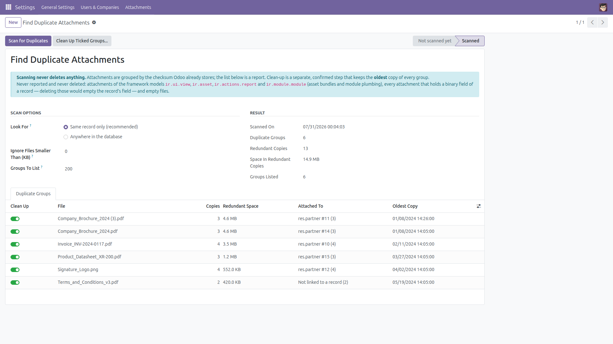
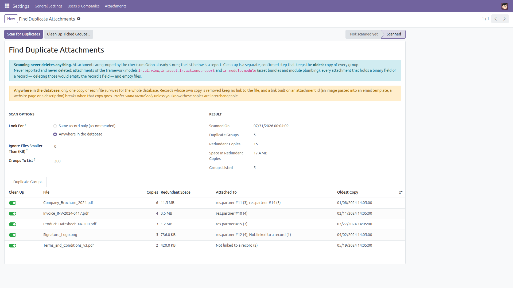
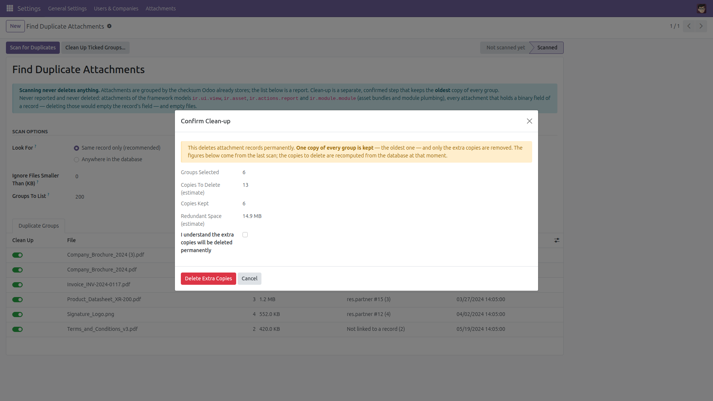
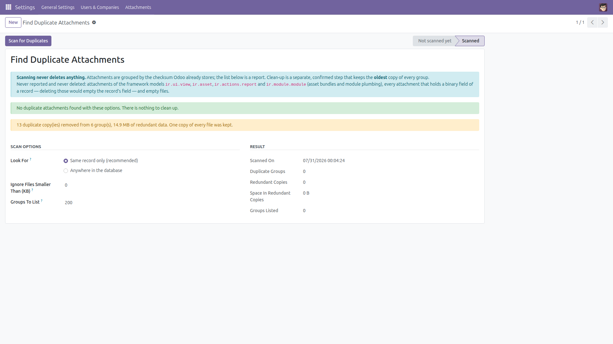

Find Duplicate Attachments
Report first. Delete only what you confirm.
The same quotation PDF gets emailed, re-attached and re-uploaded dozens of times, and Odoo keeps every copy as its own attachment. This module groups attachments by the checksum Odoo already stores and shows every group of identical files: how many copies exist, the space the redundant copies account for, and which records they are attached to. Clean-up is a second, explicitly confirmed step that keeps the oldest copy of every group and removes only the extras.
Free and open source (LGPL-3), Odoo 14.0 through 19.0.
- Safe by default — out of the box a group is the same file attached several times to the same record, so removing the extras can never leave a record without its file.
- Database-wide when you ask for it — a second, clearly labelled option looks for identical files anywhere, and warns you that only one copy will survive for the whole database.
- Grouped by checksum — an aggregate over the checksum column, not a walk through the attachment table, so it stays fast on large databases.
- You see the cost — copies per group, redundant space per group and for the whole database.
- You see where they live — each group names the record the copies are attached to, or says they are not linked to any record.
- Nothing is deleted by the scan — the report is read-only; the clean-up button is separate and asks for an explicit confirmation.
- One copy always survives — the oldest copy of every group is kept, and the group is recomputed from the live table at the moment of deletion.
- Group by group — untick any group you want to leave alone before cleaning up.
- Administrators only — the whole tool, and the clean-up in particular, is limited to Settings administrators, and deletions still go through Odoo's own attachment access rules.
What is never reported and never deleted
- Attachments that store a binary field of a record (
res_field is set) — deleting one would empty that field on the record.
- Attachments of the framework models
ir.ui.view, ir.asset, ir.actions.report and ir.module.module — the asset bundles and the module plumbing Odoo keeps for itself.
- Empty files: there is nothing to reclaim, and a zero-byte row is usually evidence of a failed upload.
- Unique files. A file is only ever touched when another copy of the exact same bytes exists inside the same group, and only after the oldest copy of that group has been secured.
- Anything you untick, and everything at all until you tick the confirmation box.
Two things to know before you delete: a copy that was posted in a chatter message disappears from that message as well, and a link built on an attachment id — an image pasted into an email template, a website page or a description — breaks if that particular copy is the one removed. The default same-record scope is the conservative choice for both.
Screenshots

The scan: every group of identical files with its copy count, redundant space, where the copies are attached and the date of the oldest copy. Pick the scope at the top, untick any group you want to leave alone.

The database-wide scope merges copies that live on different records — and says plainly what that means before you clean anything up.

The confirmation: how many groups, how many copies are deleted, how many are kept. Nothing happens until the box is ticked.

After the clean-up: what was removed, and a fresh scan confirming there is nothing left to clean.
Installation
- Copy the
duplicate_attachment_cleaner folder into your addons path.
- Open Apps, click Update Apps List, search for Find Duplicate Attachments and click Install.
- No dependency beyond the standard
base module.
Configuration
- Nothing to configure. Access is granted to the Settings / Administration group only.
- Choose the scope: Same record only (the default, and the one that can never leave a record without its file) or Anywhere in the database.
- Optional: raise Ignore Files Smaller Than (KB) to skip small icons and signatures.
- Optional: change Groups To List if you want more or fewer groups on screen; the totals always cover the whole database.
- Take a backup before your first clean-up, as you would for any bulk deletion.
Usage
- Go to Settings → Attachments → Find Duplicate Attachments.
- Leave Look For on Same record only, or switch it to Anywhere in the database if you accept that a single copy will survive for the whole database.
- Click Scan for Duplicates. The result is a report: no attachment is modified.
- Read the groups: file name, number of copies, redundant space, where the copies belong and the date of the oldest copy.
- Untick any group you want to keep as it is.
- Click Clean Up Ticked Groups..., check the numbers in the dialog, tick the confirmation box and click Delete Extra Copies.
- The oldest copy of every ticked group stays, the extras are deleted, and the scan is refreshed with a summary of what was removed. A group whose records you are not allowed to write, or that changed while the clean-up was running, is left alone and reported as such.
Good to know
Odoo stores one physical file per checksum in the filestore, so the immediate win of a clean-up is a smaller attachment table, shorter attachment lists and lighter database dumps; disk space is reclaimed for attachments stored in the database and once the filestore garbage collector has run. Deletions go through the standard attachment access rules, and a group whose records the administrator may not write is skipped instead of failing the whole run.
Version notes
Identical behavior on every supported series (14.0 – 19.0).
License: LGPL-3 · Source on GitHub · Issues and contributions welcome.